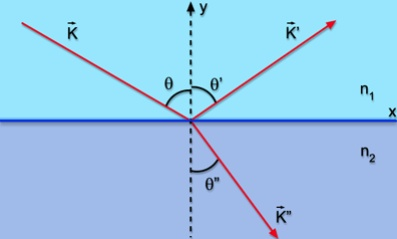

Refração
O que é?
É o fenômeno óptico em que ocorre alteração da velocidade da luz em virtude da mudança de meio de propagação. No vácuo, a velocidade da luz possui seu valor máximo (3,0 x 108 m/s); mas ao penetrar em diferentes meios, a sua velocidade é reduzida de acordo com as características do lugar onde as ondas luminosas propagam-se.
Quando um feixe de luz incide em uma superfície líquida é refletido por esta e desviado (isto é refratado), ao penetrar na água. O feixe incidente é representado por uma reta única , o raio incidente, paralelo ao sentido de propagação. Supondo que o feixe incidente seja um onda plana, com as frentes de onda normais ao raio incidente. Os feixes, refletido e refratado, são também representados pelos raios respectivos. Os ângulo de incidência θ, de reflexão θ' e o de refração θ'' são medidos entre a normal à superfície (que é o plano perpendicular ao plano de incidência) e o raio correspondente, como mostra a figura.
A refração da luz depende diretamente do comprimento de onda, assim foi possível para Newton mostrar o espectro da luz utilizando um prisma.
Leis
As leis que governam a reflexão e a refração são de fácil constatação experimental.
1º Os raios refletidos, refratados e incidente pertencer a um mesmo plano.
2º A segunda lei da refração, também conhecida como lei de Snell-Descartes, é usada para calcular o desvio angular sofrido pelo raio de luz refratado. De acordo com essa lei, a razão entre os senos dos ângulos de incidência e refração é igual à razão entre as velocidades da luz nos meios incidente e refratado, respectivamente. A fórmula da 2ª lei da refração é mostrada a seguir, observe:

3º Para a reflexão temos que:

Índice de Refração
É uma grandeza adimensional, isto é, uma grandeza que não tem unidade de medida, calculada pela razão entre a velocidade da luz no vácuo e a velocidade da luz naquele meio.
Quanto maior é o índice de refração de um meio, menor é a velocidade em que a luz se propaga em seu interior, em outras palavras, dizemos que o meio é mais refringente. Uma vez que não existe qualquer meio óptico em que a luz se propague mais rapidamente que no vácuo, o índice de refração absoluto é sempre maior ou igual a 1.